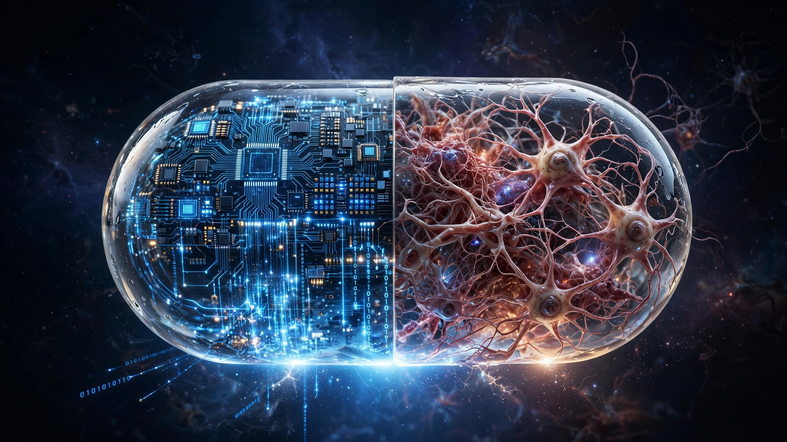

🧬 Longevity
AI-Designed Drugs Ace the Cheap Test and Flunk the Expensive One. The Savings Math Is Brutal.
AI-designed molecules pass Phase 1 clinical trials at 85%, crushing the historical 50% average. Phase 2 success holds at the same 40% it has always been. Run the numbers and AI saves $20 million per approved drug in a process that costs $2.6 billion. The pharma industry has spent billions optimizing the one part of drug development that was never the bottleneck.

Eighty-five percent. That is how often AI-designed drug molecules survive Phase 1 clinical trials, the stage where researchers give a small group of healthy volunteers a candidate compound and check whether it poisons them. Historically, the rate has hovered around 50%, and investors have treated that number like a revolution.
It is not. Not even close.
A Boston Consulting Group analysis of approximately two dozen AI-discovered molecules that have reached human testing found something the pitch decks leave out. In Phase 2, the first time a drug is tested in actual patients to see whether it does anything at all, AI-designed candidates succeed at roughly 40%. That is indistinguishable from the industry average for conventionally designed drugs. Every point of that improvement vanishes the moment biology stops being a chemistry problem and becomes a human-body problem.
Understanding why that gap matters requires understanding where the money actually goes.
The Anatomy of a $179 Million Gauntlet
Bringing a drug from first-in-human testing to FDA approval requires surviving four sequential filters. Each one is more expensive than the last, and the dropout rate at each stage compounds viciously. Here is what the math looks like for a single approved drug, working backward from approval to estimate how many candidates you needed at each stage:
| Phase | Success Rate | Avg. Cost per Trial | Candidates Needed per Approval | Total Phase Spend |
|---|---|---|---|---|
| Phase 1 (safety) | 50% | $4M | ~12 | $48M |
| Phase 2 (efficacy signal) | 40% | $13M | ~6 | $78M |
| Phase 3 (confirmatory) | 58% | $20M | ~2.4 | $48M |
| NDA Review | 91% | ~$5M | ~1.4 | $5M |
| Total | $179M |
That $179 million is the direct trial cost for one approval. The full industry figure, including preclinical research, failed programs across the portfolio, and opportunity cost of capital, is the infamous $2.6 billion per approved drug estimated by the Tufts Center for the Study of Drug Development. Either way, the distribution is clear: Phase 1 accounts for 26.8% of direct trial spending, while Phase 2 and Phase 3 together account for 70.4%.
What AI Actually Saves
Now run the same table with AI's improved Phase 1 success rate of 85%:
| Phase | AI Success Rate | Cost per Trial | Candidates Needed | Total Phase Spend |
|---|---|---|---|---|
| Phase 1 | 85% | $4M | ~7 | $28M |
| Phase 2 | 40% | $13M | ~6 | $78M |
| Phase 3 | 58% | $20M | ~2.4 | $48M |
| NDA Review | 91% | ~$5M | ~1.4 | $5M |
| Total | $159M |
Savings: $20 million per approved drug, an 11.2% reduction in direct trial costs.
Against the full $2.6 billion industry estimate, that is a 0.77% reduction, less than one percent. The entire AI drug discovery revolution, as currently measured in clinical outcomes, shaves three-quarters of a penny from every dollar spent bringing a drug to market.
Why Phase 1 Was Never the Problem
The reason AI dominates Phase 1 is the same reason Phase 1 was never the hard part. Safety testing is fundamentally a chemistry and pharmacology problem: will this molecule hold together in a human body, will it reach its target, will it cause organ damage at therapeutic doses? These questions have firm physical rules, enormous training datasets, and structural regularity that machine learning was born to exploit. AI predicts molecular stability, ADMET properties (absorption, distribution, metabolism, excretion, toxicity), and binding affinity with genuine precision because physics cooperates with pattern recognition.
Phase 2 inhabits a different universe entirely, one where the question is no longer "does this molecule survive the body?" but "does it treat the disease?" That distinction sounds simple, almost pedantic, but it has been the graveyard of pharmaceutical ambition for half a century.
A molecule can bind perfectly to its target and still fail because the disease has redundant pathways. It can clear toxicology panels and still trigger immune responses at therapeutic doses that Phase 1's healthy-volunteer model never predicted. It can show beautiful pharmacokinetics and still discover that the target it hits so elegantly turns out to be downstream of the actual disease driver, producing no clinical improvement whatsoever. As the ProMarket analysis summarizes it, AI is solving chemistry problems with chemistry data while Phase 2 failures are biology problems that require biological understanding we do not yet have.
The Wrong Bottleneck, Quantified
Consider the asymmetry in percentage terms:
- Phase 1 represents 26.8% of direct trial costs. AI improves its success rate by 35 percentage points.
- Phase 2 represents 43.6% of direct trial costs. AI improves its success rate by 0 percentage points.
- Phase 3 represents 26.8% of direct trial costs. No AI data exists yet.
A single percentage-point improvement in Phase 2 success would save approximately $3.3 million per approved drug, and a single percentage-point improvement in Phase 3 would save roughly $3.4 million, yet AI's headline-grabbing 35-point improvement in Phase 1 saves only $20 million total, a number that means you would need a mere 6-percentage-point Phase 2 improvement to match AI's entire Phase 1 contribution, and Phase 2 trials generate proportionally richer data about what actually goes wrong because they run on 10 to 50 times more patients.
Yet that is precisely where the industry has underinvested. A 2026 review in Pharmaceuticals analyzed the clinical track record of AI-assisted drug discovery programs and concluded bluntly: "AI has not yet reduced Phase II/III attrition significantly." The overall approval probability for AI pipelines remains 8-12%, indistinguishable from the traditional rate.
Meanwhile, Late-Stage Failures Are Getting Worse
While AI streamlines the front end of drug development, the back end is actively deteriorating. A longitudinal study published in Nature Reviews Drug Discovery in January 2026 analyzed 3,180 terminated clinical trials between 2013 and 2023 and found that the rate of late-stage terminations doubled from 11% to 22% over the decade. Science was not the primary driver; it was strategic and business factors: M&A activity, portfolio reprioritization, and leadership changes at pharma companies.
Phase 3 trials cost $50 million to $250 million per asset. When 22% of them die for reasons that have nothing to do with whether the drug works, the financial waste dwarfs anything AI saves at the front end of the pipeline. Quick math: if 50 drugs enter Phase 3 annually across the industry and 22% terminate for business reasons at an average cost of $100 million each, that is $1.1 billion per year in strategic waste alone, roughly matching AI's estimated $1 billion in annual Phase 1 savings at full hypothetical adoption across all programs.
In effect, the industry is running a race where AI optimization shaves seconds off the starting blocks while corporate boardrooms add minutes at the finish line.
The Investment Math Gets Worse
According to BullFrog AI CEO Vin Singh, speaking publicly in July 2026, "more than 90% of AI deals in pharma are missing their milestones." He described the landscape as dominated by companies "wrapping open-source tools rather than innovating" and predicted an imminent "shakeout between players and pretenders."
The total capital deployed into AI-driven drug discovery platforms since 2020 is estimated at $15-20 billion across venture-funded startups, pharma partnerships, and internal programs at major companies. If the annual industry-wide savings from AI's Phase 1 improvement is roughly $1 billion at full adoption, the payback period is 15-20 years, and that assumes Phase 1 improvement holds at current rates as the sample size grows beyond BCG's "about two dozen" molecules.
Compare that to a structurally simple reform: if pharma companies committed to data-sharing standards that allowed failed Phase 2 compounds to be openly studied for why they failed, the accumulated dataset would directly attack the actual bottleneck. The FDA's Project Optimus is a small step in this direction, redesigning dose optimization to improve Phase 2 outcomes, but it operates at regulatory speed, not venture-capital speed.
Limitations
This analysis carries real caveats. BCG's Phase 1 and Phase 2 success rates come from approximately two dozen AI-discovered molecules, a sample small enough that a handful of unusually successful or unsuccessful candidates could skew the numbers meaningfully. The first AI-designed drugs are only now entering Phase 3, so we have no track record there. It is possible, though unproven, that better Phase 1 filtering produces a higher-quality pool of Phase 2 candidates whose superior characteristics only become apparent over time and larger sample sizes. Success rates also vary enormously by therapeutic area: oncology Phase 2 success is below 30%, while rare diseases can exceed 60%, and AI's impact may differ across these categories.
The $2.6 billion Tufts estimate includes opportunity cost of capital, which some researchers argue inflates the real figure. Direct out-of-pocket cost is closer to $1.4 billion, which would make AI's $20 million savings represent about 1.4% rather than 0.77%. Either way, the conclusion holds: AI is optimizing a cheap step in an expensive process.
The Strongest Case for AI Pharma
The bull case is straightforward and deserves its full hearing. AI's Phase 1 improvement means more candidates survive to enter Phase 2, creating a larger pool of potential winners. Even at the same 40% Phase 2 success rate, the absolute number of drugs reaching Phase 3 increases because the funnel starts wider. BCG's analysis estimates that end-to-end approval odds roughly double from the historical 5-10% to 9-18%, a real and meaningful improvement in how many drugs reach patients.
There is also a timeline argument worth taking seriously. AI-designed molecules enter clinical trials faster, typically shaving 1-3 years off preclinical development. Time has financial value, and faster clinic entry means faster revenue if the drug succeeds. This acceleration is real, documented, and valuable even if Phase 2 and Phase 3 success rates remain unchanged.
Neither argument, however, changes the core math. Cost savings are concentrated in the cheapest phase, and the hard problem of predicting whether a drug will work in sick humans remains exactly as unsolved as it was before AI arrived.
What You Can Do
If you work in pharma R&D: Pressure your organization to invest in Phase 2 failure analysis. Every Phase 2 failure generates data about why the drug did not work in patients. That data is routinely buried in confidential files and never shared. Open-source Phase 2 failure databases would be the single highest-leverage investment the industry could make.
If you invest in biotech: Demand phase-stratified success data from AI drug discovery companies. An 85% Phase 1 success rate sounds transformative until you learn it saves $20 million per drug. Ask for Phase 2 outcomes before marking up the valuation.
If you follow the sector: Watch for the first AI-designed drugs to complete Phase 3 trials, expected in late 2026 through 2027. That data will determine whether AI's Phase 1 filtering genuinely produces better Phase 2 and Phase 3 candidates, or whether the improvement dead-ends at safety testing. The entire thesis depends on those results.
The Bottom Line
AI drug discovery is real, it works, and it does precisely what its architects promised in the investor deck. It just works on the wrong problem, optimizing the one step in pharmaceutical development that was never the reason drugs fail to reach patients. The pharmaceutical industry does not fail because it cannot design safe molecules. It fails because safe molecules do not become effective medicines. Phase 1 was never the bottleneck, Phase 2 attrition was, and AI has not touched it. Billions have been spent optimizing molecule design while the biology of human disease remains the same irreducible challenge it has always been. Until AI can predict whether a drug will work in patients, not just whether it will survive them, the revolution is a $20 million footnote on a $2.6 billion problem.